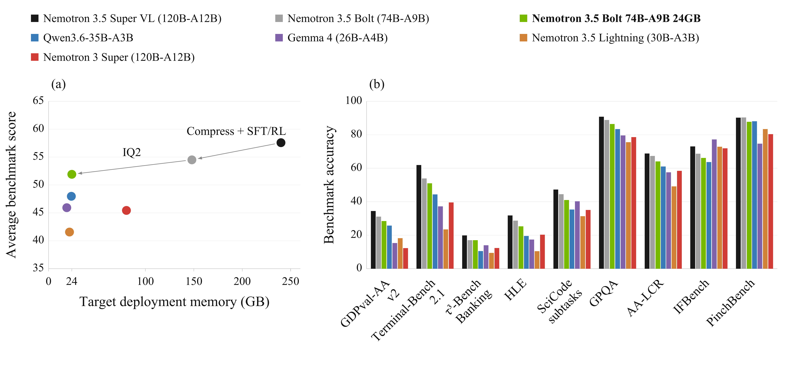
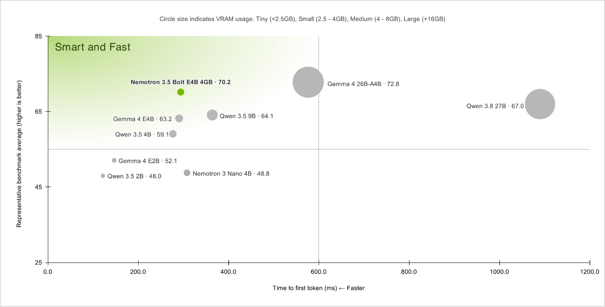
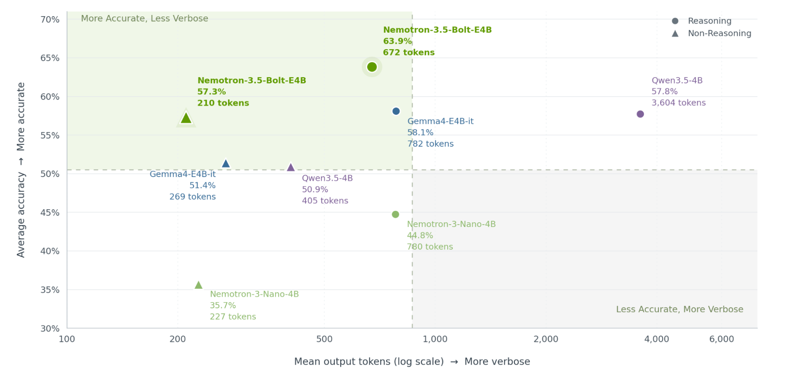

Nemotron 3.5 Super VL / Bolt
同一发布阶段中的两种任务
官方模型卡写明 2026-10-15 发布，Bolt 博客也标为 10 月 15 日；博客有时区时间，模型卡只给日期。训练时期、仓库创建时间、lastModified 均不替代这个发布日期。
| 项目 | Super VL | Bolt |
|---|---|---|
| 总参数 / active | 120B / 12B | 74B / 9B |
| 上下文窗口 | 1M，输入输出共享 | 256K |
| 角色 | 多模态父模型 | 从父模型结构压缩的本地 Agent 模型 |
| 权重选择 | BF16、NVFP4、Base 等 | BF16 定制基准、24GB 混合量化、GGUF |
| 推测解码 | 原生 MTP | 配套 LiLiCorr drafter |
| 许可 | OpenMDW 1.1 | 原卡列 OpenMDW 1.1 |
“24GB”是部署版本设计目标，不是 BF16 的体积，更不是任意 256K 上下文、并发、视觉输入都能在 24GB 总系统内运行。激活参数减少计算，但全部权重、KV、运行时和视觉组件仍需内存。

图：官方 Super 模型卡结果。指标绑定其 harness，不代表本次本地实测。
Super：能力来自训练链，而不只是接一个视觉编码器
Super 使用混合 Mamba-2、MoE、Attention 主干，视觉侧是 C-RADIO encoder 与 connector。模型卡列出 512 个 routed experts；不要把路由专家总数与每 token 活跃参数混为一谈。
公开训练路径可以按依赖关系理解：
- 冻结主干训练 MTP，随后通过来自 Nemotron 3 Ultra Base 的 1T token 蒸馏更新能力。
- 加入 100B Indic 持续预训练、35B 的 1M 长上下文扩展、67B 的 SWE 中间训练，再做 9B 长上下文恢复。SWE 数据包含仓库、issue/PR、diff、CI 日志和 Agent 轨迹。
- 训练视觉 encoder / connector，进行语言与视觉联合的两阶段 SFT，序列打包至 524,288。
- 结合可验证奖励 RL、RLHF、专项教师与多教师 on-policy 蒸馏；最后对冻结的后训练主干重新训练 MTP。
- NVFP4 通过 QAD 恢复量化质量；不是把所有模块无差别四比特化。
卡中语言基础训练规模超过 20T tokens；这与 Bolt 的 80B 压缩训练量是不同口径，不能相加成一个新的训练总量。公开流程仍缺完整可复现配比和逐项因果消融；知道阶段名不等于知道每一步的独立贡献。
Bolt：先改变结构，再恢复能力，再按模块量化
Star Elastic 用预算条件路由器选择各层专家数量与 MoE 中间宽度，在结构搜索中考虑后续量化占用，将 120B/A12B 压到 74B/A9B。博客给出专家 top-k 从 22 改为 9。它不是简单删掉固定比例层，也不是在同一权重上换文件格式。
压缩后先恢复视觉能力，再做模拟环境端到端 RL；最后进一步优化推理路径与工具执行的 token 效率。这里最值得研究的是：压缩损失能否被任务反馈补回，而不是只看压缩前后知识问答均分。
| 模块 | 24GB 版本的处理 |
|---|---|
| routed 与 shared experts 的 FC1 / FC2 | IQ2_XXS，2.0625 bits/element |
| Mamba 线性层 | NVFP4 |
| lm_head、embedding、attention、Latent MoE | Q8_0 |
| 恢复方法 | Quantization-aware distillation |
因此，“整个模型只有 2bit”是不准确的。Super NVFP4 也保留视觉 encoder / connector、Mamba convolution、embedding 的 BF16 与 router 的 FP32；Blackwell W4A4 与其他硬件 W4A16 路径不能混报。

图：官方按约 24GB 内存级筛选的对照；这是特定筛选条件，不是所有开放模型总榜。

图：博客展示压缩到部署阶段的精度变化。与训练数据、后训练同时改变时，不把全部收益只归因于比特数。
检查弱项：量化不会在每个任务上等比例退化
下面第一张表来自官方控制其他参数不变的 Super BF16 / NVFP4 比较。保留 offline 标记，不与在线网页环境混用。
| 基准 | Super BF16 | Super NVFP4 |
|---|---|---|
| GPQA Diamond | 89.52 | 89.90 |
| SWE-bench Verified | 71.10 | 71.07 |
| SWE-bench Pro | 51.78 | 51.30 |
| Terminal-Bench 2.1 | 60.67 | 62.78 |
| BrowseComp | 78.00 | 77.50 |
| WebVoyager offline | 77.72 | 66.31 |
| OSWorld-Verified | 51.14 | 52.30 |
| DeepSWE offline | 24.65 | 18.20 |
SWE Verified 几乎持平，WebVoyager 却下降 11.41 个百分点；Terminal / OSWorld 反而略高。正确结论是逐任务验收 checkpoint，不是宣称“量化完全无损”或“所有任务都变差”。同一官方对照中 Qwen3.8 Flash Next 的 Terminal-Bench 2.1 为 85.8，也不能被只选优势项目的叙述省略。
| 基准 | Bolt 24GB | Bolt BF16 |
|---|---|---|
| Terminal-Bench 2.1 | 50.98 | 53.93 |
| GPQA Diamond | 86.43 | 88.83 |
| PinchBench | 87.82 | 90.35 |
| MCP Atlas | 52.20 | 55.60 |
| BrowseComp | 66.75 | 70.00 |
| WebArena Vision | 50.86 | 50.25 |
| AA-Omniscience non-hallucination | 61.27 | 56.14 |
这张表不是 Super 的量化实验，也不能把不同榜单上 MCP Atlas 的 reported 全量值与 reproduced 500 题子集混成同一设置。NeMo Gym 提供部分重现实验配方；一些视觉基准仍使用待开源内部 scaffold，复现能力不是全面完备。
84 tokens/s 必须连同慢项一起读
博客在 Windows 11 ARM x64、同一 RTX Spark（Surface Laptop Ultra，128GB）上用 llama.cpp 测试：
| 模型配置 | SPEED-Bench-Coding TPS ↑ | AA AgentPerf Local replay 秒 ↓ |
|---|---|---|
| Bolt IQ2_XXS + LiLiCorr | 83.99 | 600.80 |
| Qwen3.6 35B-A3B Q4 + MTP | 96.63 | 453.97 |
| Gemma4 26B-A4B Q4 + MTP | 100.56 | 480.68 |
| Qwen3.8 27B Q4 + DFlash | 28.26 | 1043.28 |
Bolt 不是这张表中最快的模型。速度与质量 Pareto 的主张依赖质量维度，不能删去 Qwen3.6 / Gemma4 更快的事实。LiLiCorr 是 1.13B 参数的并行 drafter（不含共享 embedding / head），与目标模型是两个组件。博客另列 7-token draft、vLLM 并发 64 的接受长度，不能与上述 llama.cpp 端到端结果拼成一个实验。
研读后的验收方案
固定任务集、harness、parser、thinking effort、输入长度与输出预算，比较 Super BF16、Super NVFP4、Bolt BF16、Bolt 24GB。每项记录终态成功、工具格式错误、无效重复、每成功任务 tokens、延迟、峰值内存；推测解码开关另做同硬件对照。卡里的示例允许本地媒体目录过宽，实际服务应收窄文件权限，不原样照搬到多人服务。
来源与导航
- HF Model Card · Super BF16；本地原卡
- HF Model Card · Bolt 24GB
- Tech Blog · Bolt
- Tech Report · Super / Lightning PDF
- Tech Report · Bolt PDF
- 同团队动作生成支线
📊 相关可视化：中文 Poster
10月23日同 family 新增：Bolt E4B，不能照搬74B压缩链
10月24日巡检新发现四个E4B仓库，但官方博客与4GB原卡都明确10月23日发布。因此按10/23同族更新加入近30天表格；维持本条3.5 family的10/15首发及原URL，不拆四个正代。前面的Super→74B压缩分析仍然有效，但不自动适用于这一支。
| 项目 | Bolt E4B | 与74B Bolt的区别 |
|---|---|---|
| 基座 | Gemma-4-E4B-it后训练 | 不是Super VL结构压缩得到 |
| 总参数/有效参数 | 8B / 4B effective | 不把4B写成总参数，或未经证实称4B MoE激活 |
| 输入/输出 | 当前卡明确文本→文本 | 上游结构含多模态模块，不证明本版视觉/语音已评测 |
| 上下文 | 部署示例总长度65536 | 原卡输入/输出各写64K，不等于同时输入64K再输出64K |
| 发布格式 | BF16与Q4_K_M GGUF | BF16用于定制/评测，4GB是推理目标版本 |
| 加速 | 两条配套DFlash drafter路径 | 不是74B的LiLiCorr，也不是两个独立聊天正代 |

图的质量是MultiChallenge、RoleMRC、BFCL-v3、IHEval、SysBench与RelyToolBench的Q4均值；RTX5090、约3K输入/50输出。圆面积表示显存档位。不同质量项目、精度、harness和硬件的数字不能跨图拼成一个Pareto结果。
训练最值得注意的是两种模式共同优化
官方卡写GRPO与异步训练/推理解耦；博客进一步明确RLVR和RLHF，使用NeMo RL/Gym，环境覆盖工具schema、多轮工具、层级指令、格式、日历和GenRM等。每个样本都用于思考和非思考两种模式，批内非思考:思考为2:1，分环境分模式监控reward。 这比“训练完把think关闭”多了一层分布设计，但不能据此推测未披露的各环境权重和训练步数。
后训练使思考链与最终回答都变长，因此在GenRM环境增大组相对长度惩罚；其他环境关闭overlong过滤。这两项是不同控制：前者改变奖励偏好，后者改变被接受的轨迹分布，不能写成简单“全数据截短”。
选定BF16后，用同一训练step约1M rollout tokens做llama.cpp imatrix校准，再量化Q4_K_M。DFlash一次提出多个draft token，由target并行验证；官方相对Gemma原MTP“最高21%吞吐提升”依赖任务与实现，不能写成任意请求都21%。本轮未运行权重、训练、推理或测速。

图中思考/非思考模式是圆/三角；输出token为对数坐标。官方“最多80%更少token”不能解释成所有任务成本都减少80%，更不能把简短回答当作工具执行成功。原卡多数任务用思考模式，RoleBench、EQ-Bench、RULER例外；图中均值也不替代逐任务结果。
| 官方模型卡BF16结果 | E4B Bolt | Gemma4 E4B | Qwen3.5 4B |
|---|---|---|---|
| MultiChallenge | 53.10 | 42.08 | 51.76 |
| RoleBench | 67.05 | 49.95 | 53.66 |
| BFCL-v3 | 68.51 | 66.39 | 70.95 |
| Tau2-Bench | 55.10 | 38.50 | 75.06 |
| IHEval | 84.79 | 67.04 | 60.57 |
| RULER64K | 86.99 | 86.55 | 95.15 |
| LongMemEval | 72.10 | 70.95 | 66.85 |
| GaRAGe | 42.61 | 34.73 | 24.66 |
E4B并非全面超过Qwen；EQ-Bench也略低Gemma。Q4的MultiChallenge为55.60、BF16为53.10，这种单项上升不能被写成“量化提高能力”的普遍因果结论。
4GB、异步工具和“完整recipe”的三个坑
| 硬件/条件 | 峰值显存GB | TTFT毫秒 | TPS |
|---|---|---|---|
| RTX5070，0cache/3K输入/50输出 | 3.5 | 548 | 133.4 |
| RTX5070，32Kcache/2K输入/256输出 | 4.3 | 1238 | 106.2 |
| RTX Spark，0cache/3K输入/50输出 | 3.1 | 930 | 67.0 |
| Orin Nano8GB，0cache/3K输入/50输出 | 4.2 | 5785 | 15.5 |
| Orin Nano8GB，32Kcache/2K输入/256输出 | 4.9 | 6259 | 13.0 |
以上为官方batch1、Q4_K_M、llama.cpp CUDA+AIPerf测量；不是本地实测，也不代表64K/多并发/视觉整套系统总显存。设备Agent“能运行”与“响应足够快”须分别判断。
enable_thinking与conversational_mode可以组合，后者鼓励简短口语输出，不是禁用思考的同义词。运行时thinking budget可能截断思考，须扫预算并同时记录任务质量与总生成上限。
原卡不允许游离的tool消息。异步工具采用：assistant发tool_call→立即tool确认pending→结果到达后宿主以结构化user TOOL UPDATE回填。task ID、结果来源与状态转移仍由宿主校验，不能因为放在user role就信任任意自然语言“工具完成了”。 这也不是原生任意顺序tool-role协议。
博客“full recipe”链接实际是AutoModel定制文档：MedPix-VQA全参/LoRA示例，8/2张H100，LoRA dim16/alpha32、AdamW2e−4，冻结视觉/音频塔。它不是原始多环境RL训练的全部复现配方；文档还使用E4B-4GB-BF16名称，与当前有效E4B-BF16仓库名不同，不能盲跑或伪称已验证该入口。
📊 相关可视化：E4B专题中文 Poster，与既有family同目录